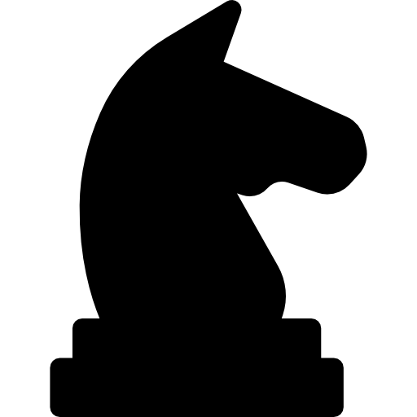

O cavalo é uma das peças mais únicas do xadrez, principalmente por causa do seu movimento em formato de “L”. Ele pode andar duas casas em uma direção (horizontal ou vertical) e depois uma casa para o lado, formando esse padrão característico. Além disso, o cavalo é a única peça que pode pular sobre outras, o que o torna muito útil em posições fechadas, onde outras peças ficam bloqueadas. Cada jogador começa com dois cavalos, e eles costumam ser desenvolvidos no início da partida, ajudando no controle do centro do tabuleiro. Por causa do seu movimento diferente, o cavalo pode surpreender o adversário, atacando peças de forma inesperada e criando ameaças difíceis de prever. Outra característica importante é que o cavalo sempre alterna a cor da casa em que está a cada movimento. Isso influencia bastante nas estratégias, já que ele pode alcançar casas que outras peças têm dificuldade em controlar. Embora tenha um alcance menor em comparação com peças como a dama ou o bispo, o cavalo compensa isso com sua capacidade de saltar peças e criar jogadas táticas, como os famosos “garfos”, onde ataca duas peças ao mesmo tempo. Em resumo, o cavalo é uma peça imprevisível e estratégica, essencial para criar oportunidades e desorganizar a posição do adversário ao longo da partida.